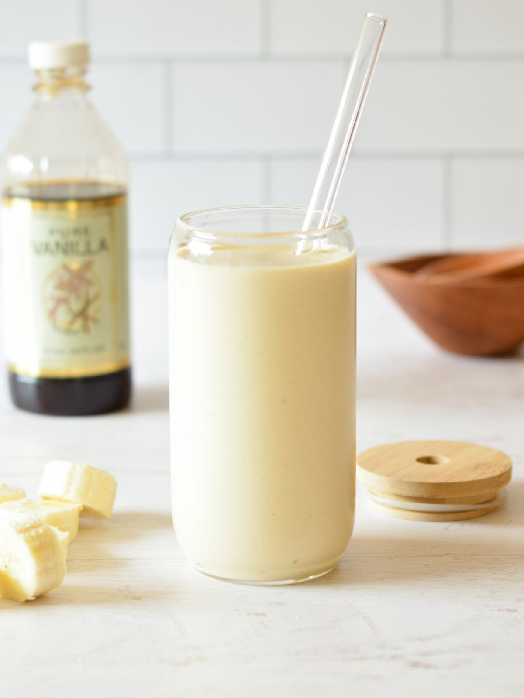

A smoothie that doesn't need a blender (What?!)
seriously though
the picture isn't from the recipe (sorry)

What you need:
- 1 cup unsweetened milk
- 1/2 cup low-fat Vanilla Greek yogurt
- 2 drops vanilla extract (optional)
- 1 to 2 teaspoons maple syrup or honey
- Dash of cinnamon
- 2 tablespoons chia seed
- 2 ice cubes
How to make:
- In a plastic shaker cup or jar, combine half the milk and all the yogurt. Seal and shake until the yogurt is smooth (about 15 seconds). Add the rest of the milk and other ingredients, and shake for an additional 30 seconds or so. Let sit for 5 minutes before drinking.
I got this from this website and go to the bottom of the page